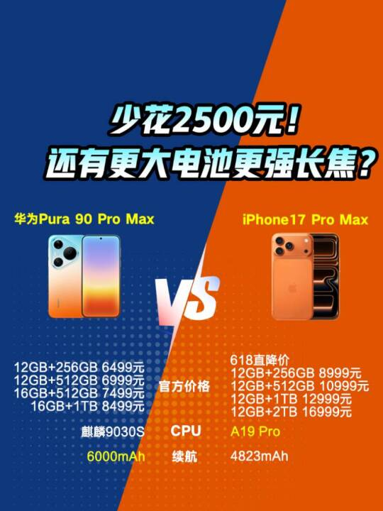
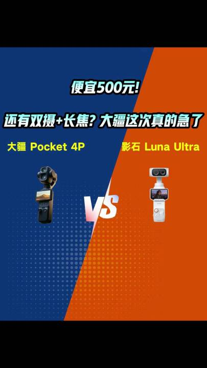

35s
《空间拥挤、长途疲劳？一台车装下全家的露营》
汽车品牌家庭用车场景混剪。痛点开场——"空间拥挤、长途疲劳"，用家庭夜间露营、草坪互动与后排熟睡孩子的镜头完成情绪反转，落点在MPV大空间与长途舒适性；叙事线完整，节奏先抑后扬。
交付的品牌短视频成片。采用 AI 智能混剪工作流：素材库多维度打标 → 按脚本叙事段落自动选材 → 混剪合成，在保证叙事完整的同时大幅缩短制作周期。
汽车品牌家庭用车场景混剪。痛点开场——"空间拥挤、长途疲劳"，用家庭夜间露营、草坪互动与后排熟睡孩子的镜头完成情绪反转，落点在MPV大空间与长途舒适性；叙事线完整，节奏先抑后扬。
第一人称口播 + 车内固定机位实拍的 UGC 素人质感成片。以"车不只是上下班的工具"开场切入选车逻辑，真人出镜讲解增强可信度，产品卖点自然融入生活化叙事。
数码科技类视频号的内容创作。围绕新品对比与选购决策两大内容线，把参数差异转译成"省多少钱、多出什么"的直给结论。

降价也拦不住参数内卷。万元级旗舰战场，苹果 iPhone 17 Pro Max 给出 618 特惠降价，门槛仍比华为 Pura 90 Pro Max 高出 2500 元；而华为还有 2 亿长焦、6000mAh 大电池与 IP69 满级防护强势宣战。

影石 8K 超清 + 2 亿宽幅震撼感，大疆用双摄 + 4K/240fps 高帧率回应。一个玩极致画质，一个玩全焦段自由，都是 1 英寸旗舰——500 元的价差，到底买到了什么？
独立设计并开发的网页应用。从信息架构、视觉到交互全部自己动手，把"想记录的事"做成好用的工具。
一个纯前端的演唱会记录工具：把每一场演出写成手账，记录日期、城市、场馆、座位、歌单和当时的心情。支持演出信息自动填充、按关键词搜索、心动指数星级评分，以及一键导出/导入备份——所有数据都保存在自己的浏览器里，无需注册登录。界面以演唱会应援蓝为主色调，配舞台灯光拼贴背景。